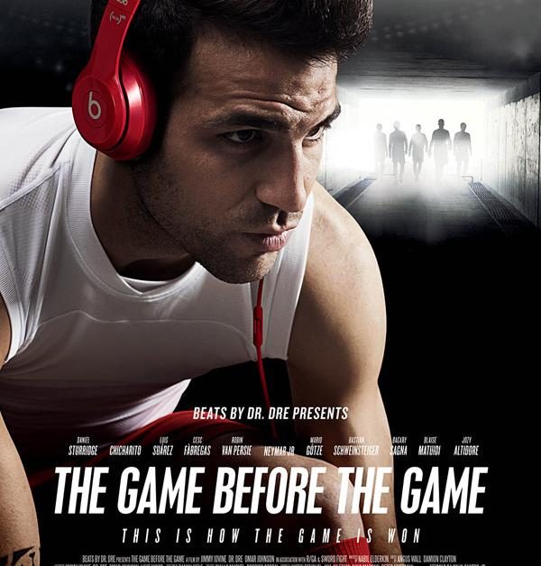
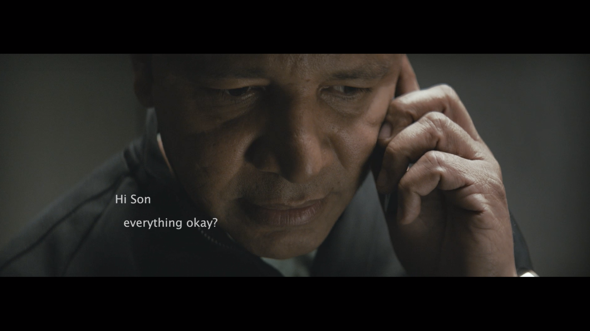
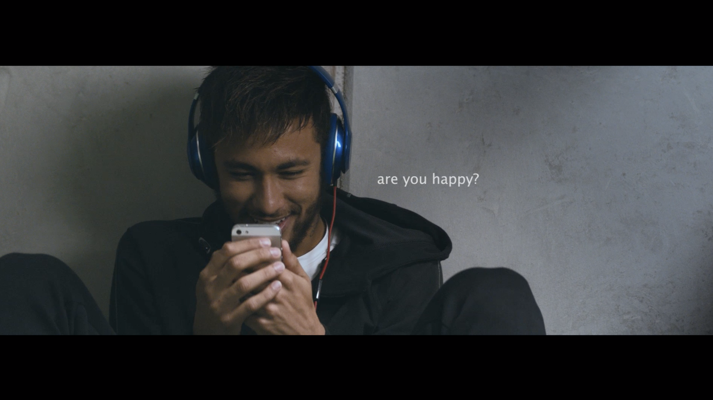

案例发生了什么



五分钟影片从内马尔赛前接到父亲电话开始，进入球员、球迷和音乐人的私密准备：祈祷、缠绷带、独处、听歌、走入球场。产品不解释音质，而是出现在比赛开始前最需要集中和隔绝噪音的时刻。
六周内围绕运动员赛程完成拍摄与后期；主片由 Neymar、Fàbregas、Suárez 等球员串联，并加入 Serena Williams、Lil Wayne、Nicki Minaj 等跨界人物。TIME 当时记录影片早期已有 700 万 YouTube 观看；球员在非官方场景继续佩戴 Beats，又把影片叙事带回真实生活。
MARKETING KNOWLEDGE ROUTER · 营销知识路由器
营销启发卡
把历届经典的记忆点、商业结构和迁移方法放在同一层阅读。 卡片底部按主题连接全站相关案例、经典方法与深度文章。
核心动作
大战前的紧张、自我保护、亲情鼓励和个人仪式带来的控制感；内马尔戴上耳机，在父亲声音与音乐中进入比赛。
传播与商业机制
耳机的功能正是把外界噪音关掉、让运动员进入自己的节奏；产品与赛前心理需求天然重合；六周内围绕运动员赛程完成拍摄与后期；主片由 Neymar、Fàbregas、Suárez 等球员串联，并加入 Serena Williams、Lil Wayne、Nicki Minaj 等跨界人物。TIME 当时记录影片早期已有 700 万 YouTube 观看；球员在非官方场景继续佩戴 Beats，又把影片叙事带回真实生活。
可复用的方法
非官方赞助不必伪装成官方；占据一个权利方难以独占、但产品真正有用的行为时刻，常常比抢赛场标识更可信。
适用条件、风险与证据
- FIFA 官方活动中耳机品类存在排他限制；必须明确拍摄、社交、训练与比赛区域的不同权利边界。
- 后续复盘还应补齐发布主体、时间线、真实执行图、媒介范围和结果口径；没有这些证据时，不把行业评价或赛事总热度写成品牌增量。
资料与来源
官方资料与原始来源
市场 / 权益
全球
非官方/运动员资源
创意打法
仪式占位型；真实习惯型；非官方借势型；跨圈层群像型
- TIME · 2014-06The Game Before the Game · 制作幕后与早期观看数据
- TIME · 2014-06-18Beats 在世界杯官方区域的品类排他边界
- Leigh Collins · 2014The Game Before the Game · 创意项目页
- OK! Magazine本页真实案例图片主源
来源按品牌/官方发布、官方账号留存、权威媒体、获奖案例库分层记录；品牌与奖项自报结果不视作独立审计。